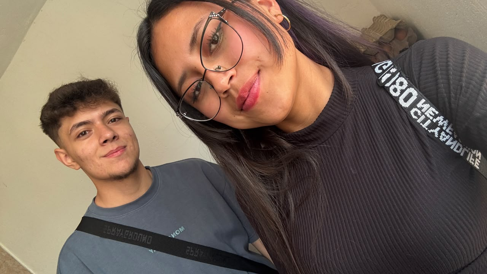
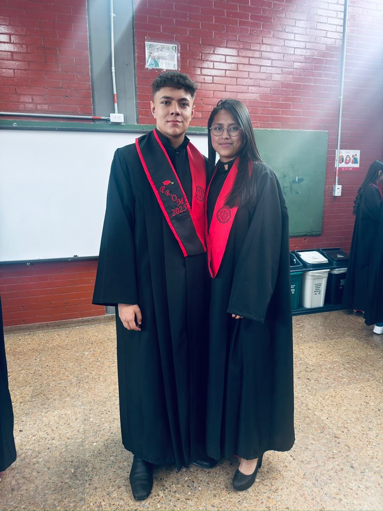

Nuestra historia está hecha para verse en una pantalla grande.
Ábrela desde un computador para disfrutarla completa.
Una historia de dos
Santiago & Sharith
Desde el 6 de octubre de 2022
06 · 10 · 2022 ♡
Nuestro tiempo
Desde aquel día
El contador sigue corriendo, igual que nuestra historia.
Estos números representan todo el tiempo que ha pasado desde
el 6 de octubre de 2022.
0Años
0Meses
0Días
0Horas
0Minutos
0Segundos
En total han sido 0 días juntos ·
0 horas ·
0 segundos.
Algunos recuerdos
Nosotros
Tres momentos, entre tantos otros, que merecen quedarse guardados.


06 · 10 · 2022
Un día que terminó siendo muchos
No hace falta ponerlo todo en palabras. Han pasado años, hemos
cambiado, aprendido y vivido muchas cosas. Y entre todos esos
momentos, hay algo sencillo que sigue igual: qué bueno que nos
encontramos.
“De todos los planes que tiene la vida, este es uno de mis favoritos.”
♡